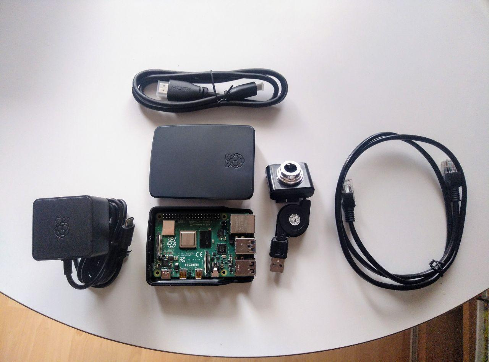

No. Only one of them. https://twitter.com/jacobian/status/1377428220732043266
Replying to @timoreilly, @jacobian and @OReillyMedia
The animosity in this response is really disappointing.
Replying to @evildmp and @flaximus
"the Two Axis/Four Quadrants Documentation System"?
"the Intent-Audience DS"?
"the Orientation-Classification DS"?
"the Learning-Information DS"?
"the Problem-Information, Practical-Theoretical DS? (a bit long perhaps)
"the Matrix DS"? (2x2 matrix)
"the Procida DS"? (üòã)
I actually went and watched @evildmp 's wonderful talk about his Documentation System... but unfortunately it's lacking a good, recognizable name üòÉ Suggestions welcome! And when we're done choosing a name, let's make it more popular üöÄ https://twitter.com/juanluisback/status/1377581584518422529
Replying to @juanluisback
The talk in question is this one https://www.youtube.com/watch?v=t4vKPhjcMZg and you have more complete information here https://documentation.divio.com/
Replying to @gvleobas and @ericholscher
and I were discussing the other day that it would be great to improve Sphinx concurrent building capabilities. Whatever you find, I'd be keen to stay in the loop :)
Replying to @concreted0g
RT @ReaderMeter: üëèüèªüëèüèªüëèüèª https://twitter.com/NatComputSci/status/1375125481813594118
Replying to @Mcotsar, @AlbertoCairo and @GuidoBCor
Más que un error de proporciones, parece que han intercambiado dos de las barras de en medio. Pero el resto está bien. Otra cosa es que a algunos les pique üòâ
Useful! https://endoflife.date/python
RT @iafur: Check out this Meetup: Building a documentation site with Markdown and Jekyll https://www.meetup.com/write-the-docs-nigeria/events/277252265/ #Meetup via @Meetup
Digging up old bookmarks I found this gem. We've come a long way... https://twitter.com/minrk/status/635567463783133184
RT @choldgraf: There's a discussion in the Sphinx repo about whether it should allow for a YAML configuration in addition to the pure Pytho…
RT @jasonhickel: A civilization that prohibits poorer nations from producing life-saving vaccines in the middle of a global pandemic is a c…
I am on this social network mostly for the bad takes üòâ https://twitter.com/asmeurer/status/1378090795618639872
Replying to @NgDocs
"The meeting host will let you in soon" :)
@NgDocs Please disallow participants from unmuting themselves next time, it was extremely annoying üòê no words about the dick drawings...

Replying to @gilgamezh
Como dicen en mi pueblo, ¬´de donde no hay mata, no hay patata¬ª üòÇ
RT @michaelwaskom: It's good to represent both central tendency and observations in the same plot, but doing this with pointplot is a littl…
RT @sdelquin: Estos días he estado aprendiendo #MyST y poniéndolo en práctica para la documentación de mi último proyecto: https://t.co/cnb…
RT @mousevspython: This week I spoke with Ngazetungue Muheue about @PythonNamibia, #Python and more!
https://www.blog.pythonlibrary.org/2021/04/05/pydev-of-the-week-ngazetungue-muheue/ @muheuenga @d…
Replying to @mousevspython, @PythonNamibia, @muheuenga, @driscollis and @PyConNA
"a community without women is not a community" ♥️
Replying to @concreted0g, @hackaday and @FreeCADNews
I think all these "free vs proprietary" tool comparisons are hindered because we can't objectively discuss about usability. UX and documentation amount for, I'd say, *most* of a project success. And yet, critics get dismissed either because (...)
Replying to @concreted0g, @hackaday and @FreeCADNews
(...) either (1) the criticism is unfair, since the tool is developed by hobbyists that don't have the resources that Big Companies have, or (2) the criticism is just false, "GIMP is more feature complete and stable than Photoshop" (excuse me, *what?*)
I think we are just stuck.
Replying to @helge_e, @concreted0g, @hackaday and @FreeCADNews
It's a fair point, but are FOSS GUIs on their local maxima already? On the @HackSpaceMag comments I see that there are missing tooltips, weird naming conventions, inconsistent icons...
Even if your premise is true (which most likely it is), there is still incremental work to do
Replying to @concreted0g, @hackaday and @FreeCADNews
Fair enough - then what is preventing us from trying to do some user studies? In this book http://www.knosof.co.uk/ESEUR/ it's claimed (paraphrasing) that software engineering has aversion to evidence-based policies, and I tend to agree! We need *moar data*
Replying to @concreted0g, @helge_e, @hackaday, @FreeCADNews and @HackSpaceMag
Hahaha sorry, I meant @hackaday üòÖ the original article you linked
RT @rabernat: Or more correctly, APIs *are* subject to copyright, but re-implementing them is considered fair use.
Just realized that docutils 0.17 added support to recommonmark as experimental Markdown parser https://docutils.sourceforge.io/RELEASE-NOTES.html#release-0-17-2021-04-03 but perhaps MyST from @ProjectJupyter has more community traction these days?
Replying to @juanluisback
After reading https://sourceforge.net/p/docutils/mailman/docutils-users/thread/rkv4nb%24139g%241%40ciao.gmane.io/#msg37118232 I get that there is a chicken-and-egg problem, in that myst-parser depends on docutils and sphinx, therefore docutils can't depend on it without some modifications.
@choldgraf do you happen to have more context on this?
Replying to @juanluisback
For curious readers, some Twitter archeology https://twitter.com/choldgraf/status/1233780222119436288
RT @readthedocs: We have released 0.5.2 of our sphinx theme to work around issues with captions and other markup. If you are seeing odd mar…
Replying to @choldgraf
Perhaps it would help the docutils maintainers adopt it? I didn't talk to them though, this is just a wild guess
RT @ReaderMeter: "How we spent our unstructured work time over the
last nine months" The blue fraction of the chart is telling, data on aca…
RT @PyConES: Va venga ¡es que tenemos demasiadas ganas de contarlo!
üì¢üêçüì¢üêçüì¢üêç
Hemos abierto el plazo para presentar propuestas de charlas pa…
RT @JOSS_TheOJ: Just published in #JOSS_theOJ: 'seaborn: statistical data visualization' https://doi.org/10.21105/joss.03021
RT @michaelwaskom: Now published in @JOSS_TheOJ, a paper about a new plotting library that may be of interest:
https://joss.theoj.org/papers/10.21105/joss.03021
Replying to @michaelwaskom
Do you have any specific complaints, or pointers to someone else's? I'd like to understand this more in the context of the work I'm doing on @readthedocs to help scientific projects with documentation.
Also, congrats for the new paper ü•≥
Replying to @michaelwaskom and @readthedocs
Too bad. I see there's an issue here https://github.com/zenodo/zenodo/issues/1859 but little discussion. I'll keep an eye on this, thanks a lot!
@coderefine Hi! May I ask what's the relationship between @coderefine and @thecarpentries or @swcarpentry ? Thanks in advance!
Replying to @westurner, @ericholscher, @readthedocs and @choldgraf
Coming back to this - Google is a bit pushy with JSON-LD instead of RDFa, but IIUC they seem to produce more or less the same effect.
Anyhow, any particular use case you had in mind for RDFa?
Replying to @choldgraf
"A Data Citation Roadmap for Scholarly Data Repositories" https://www.biorxiv.org/content/10.1101/097196v2 ?
RT @readthedocs: We're thrilled to announce our monthly newsletter. This month @juanluisback is joining our team, giving us additional capa…
RT @ericholscher: Really excited about both @juanluisback joining the team, and having more resources to do things we've talked about doing…
Replying to @gilgamezh, @ericholscher and @reydelhumo
The good old times ♥️
And yet, people are still arguing in the comments that Signal is more trustworthy than the alternatives because the server is open source.
It doesn't matter if the server of a centralized server is open source, folks. You can't verify it.
Use @matrixdotorg , it's decentralized. https://twitter.com/jonahedwards/status/1379560414481027076
What are Fortran folks using for hosting their documentation these days? Is Doxygen still a thing? cc @OndrejCertik https://twitter.com/fortranlang/status/1379429886914306049
Replying to @arclight
Curious about what you will end up using? https://twitter.com/juanluisback/status/1379830109608275971
Replying to @arclight
Thanks a lot, that's very insightful. I wonder if fixing Doxygen would be indeed more effective than writing a new system, as @OndrejCertik suggests here https://twitter.com/OndrejCertik/status/1379834466357506050 but also, I don't know how maintaned Doxygen is these days.
RT @VickyRampin: Petition to my fellow #datalibs to consider NOT referring to ISO-8601 and instead to reference RFC-3339!
ISO-8601 is payw…
Replying to @VickyRampin
And I'll be able to continue using https://xkcd.com/1179/! üòÄ
This is so true and obvious, but it takes a @jacobian to describe it so well :) Totally recommended read! https://twitter.com/jacobian/status/1379837626610556928
RT @HEPfeickert: I feel the need to say thank you and call out good behavior: The first paper to cite the #pyhf @JOSS_TheOJ paper has been…
RT @evildmp: A new name, new content, a new look and a new address.
https://diataxis.fr/
It’s probably the best documentation authorin…
RT @cocodibuja: Como montar juyter hub/lab en un VPS paso a paso. Muchas gracias @poliastro_py!. @ProjectJupyter @PythonArgentina @SciPyTi…
Great writeup! I would do it without Makefile, but the rest is üíØ https://twitter.com/ohmypy/status/1379509037532872712
RT @pyblogsal: Python educators and users: I have been working on improving SyntaxError messages in CPython lately. What error (only *Synta…
Replying to @TBryceKelly and @sid_k_ocean97
"A programming language is a formal language comprising a set of instructions that produce various kinds of output." (Wikipedia)
Sorry but this "X is not a programming language" sounds a lot like gatekeeping.
RT @reydelhumo: https://hablemospython.dev/
¡Me encantó!
Replying to @mocoma1
Son antiguas, pero echa un vistazo a https://github.com/poliastro/poliastro/wiki/SOCIS-2017-Ismael-Medina y https://github.com/poliastro/poliastro/wiki/SOCIS-2017-Antonio-Hidalgo üôÇ
Agenda for today:
- Chatting with @lais_bsc about Sphinx
- Attending @numpy_team public documentation meeting
- Reviewing an external contribution to @readthedocs
I love this job üòç
Ojalá en Madrid volviéramos a tener una alcaldesa a la altura de @AdaColau. Tiene razón cuando dice que en Twitter, aunque uno no quiera, es fácil acabar en polémicas estériles, y que lo acusen de «silencio cómplice», yo también lo he sufrido.
A seguir haciendo buena pol√≠tica üíú https://twitter.com/AdaColau/status/1381330340590055430
Replying to @lais_bsc, @numpy_team and @readthedocs
"From NerdRel to NerdRel" üòé
Replying to @DataUmbrella, @lais_bsc, @josephtlucas and @mariatta
Thanks both! üòç
Replying to @JohanMabille and @jtpio
I'm dying üòÇ
RT @melissawm: Read more about the role @numpy_team played in building the black hole image here https://numpy.org/case-studies/blackhole-image/ üòÅ https://t.co/zMH‚Ķ
So happy to see Diátaxis being slowly shared far and wide and the new name being discovered :) Just mentioned in the @numpy_team Documentation meeting by @melissawm ! https://twitter.com/evildmp/status/1380196353062621185
The first issue I ever opened in @astropy 8 years ago while I was a student at @AerospacePoliMI has just been fixed and closed. It's a long time, but sometimes the pace of open source has to be slow ♥️ https://github.com/astropy/astropy/issues/676
RT @jtpio: Just cut a new release of JupyterLab Classic, the JupyterLab distribution with the Classic Notebook look and feel.
Browser tabs…
"We are now in a post-FSF world" https://twitter.com/waldojaquith/status/1381686602372632578
Replying to @the_elven
No saben lo que significa la palabra "regret" :( Es tremenda la falta de inteligencia emocional (y cualquier otro tipo de inteligencia)
Replying to @coderefine, @thecarpentries and @swcarpentry
Makes sense, thanks a lot!
RT @ehashdn: Thread üßµ of 501(c)(3) public charities you can support instead of the @fsf, if you care about its mission:
RT @poliastro_py: Deadline for @gsoc proposals is today at 18:00 UTC, don't leave it for the last minute! üî•üïö
RT @PythonNamibia: We have finally finished plans for our first meetup!
It will be this Thursday for two hours. We have speakers from all o…
@PEBLNam Hello! Python Namibia is hosting a Python meetup this Thursday, would you folks help us spread the word? https://twitter.com/PythonNamibia/status/1381922995288047623 Thanks a lot!
Hey @naatwilwe @Namibiahouse1 ! Python Namibia is hosting an online meetup this Thursday, it would be great to have other tech loving folks from Nam in the event :) https://twitter.com/PythonNamibia/status/1381922995288047623 would you help us spread the word? And hopefully see you there!
@NamDevNetwork Hi! Would you help us spread the word about this online event, coming on Thursday? Would be great to have you there https://twitter.com/PythonNamibia/status/1381922995288047623 thanks a lot!
@LaunchNamibia @UNDPNamibia Hi! Would you help us spread the word about this online event on Thursday? https://twitter.com/PythonNamibia/status/1381922995288047623 We would love to have as many Namibian attendees as possible. Thanks in advance!
Replying to @Namibiahouse1 and @naatwilwe
Thanks for the retweet! I don't have iPhone but I'll try to get someone from the community to join :) Have a great event this afternoon you folks!
RT @evildmp: Hello world, after a break in June I'll be looking for something new.
If you have a notable product, a large developer user-…
RT @choldgraf: Does anybody know of a "github issue labels framework"? Something that defines the major categories of labels and suggested…
Replying to @NamDevNetwork
Awesome! üôå
RT @brettsky: Thanks to everyone who sent me recommendations; in the end I went with https://pydoit.org/ (see https://github.com/brettcannon/python-launcher/blob/main/dodo.py)…
"pip-tools v6.1.0 is released rocket Try out new option `pip-compile {http://setup.py,pyproject.toml,setup.cfg} --extra dev`"
This is just amazing! Thanks @metalikus and the rest of pip-tools maintainers üòç Get it now while it's hot!
https://pypi.org/project/pip-tools/
RT @PythonNamibia: We will be joined by @WillingCarol with a talk titled
"Jupyter Notebooks for Humans."
She is a leader in open source g…
RT @marlene_zw: If you are interested in developer ecosystems across the continent join us today at 1pm CAT for our session at #GTC21.
We…
Replying to @Rainmaker1973
This is... so satisfying
Replying to @ChristianHeimes, @melissawm, @therealfitz and @reydelhumo
I think @valerybriz, @gise_rossi, and many others have worked during the past year _especifically_ to make @ThePSF more known in LatAm, and also to let people already doing community work know that they could become members.
Replying to @ChristianHeimes, @melissawm, @reydelhumo, @valerybriz, @gise_rossi and @ThePSF
I was one of the people campaigning very strongly for @reydelhumo, Latam Python Ambassador in 2016, and shared the disappointment of last year's result. There were some candidates in 5th position and below that had very compelling platforms.
But I digress :)
¿Qué es la Python Software Foundation? (Infografía por @inkpanther2, promovido por @valerybriz, fuente https://github.com/valerybriz/python_infographics)
¡Únete a la conversación! https://discuss.python.org/
RT @NgDocs: First we have Nwokocha Wisdom.
He has previously taken part in Google Season of Docs ( @GoogleOSS )
As you may know, accepte…
RT @pyblogsal: Python 3.10 üêç will try to offer you suggestions from existing attributes on AttributeErrors if you mistype the name of the a‚Ķ
What is this fancy tool everybody uses for code screenshots? :) https://twitter.com/pyblogsal/status/1382290422970654720
Replying to @nwnk, @luis_in_brief, @migueldeicaza and @therealfitz
Wikipedia uses that page to claim that "@gnome is part of the GNU Project" https://en.wikipedia.org/wiki/GNOME?oldformat=true
If that's false, it would be great to have it clarified there. I'm angry the FSF gets away with this.
Replying to @dacriado and @carbon_app
Thanks!
Replying to @nwnk, @luis_in_brief, @migueldeicaza, @therealfitz and @gnome
Oh, this was already mentioned in the Talk page.
RT @luis_in_brief: Instead of amplifying an organization in its death throes, would love to fill my timeline today with stories about what…
RT @andersy005: I empathize with folks who miss in-person events, but I hope conferences keep providing the kind of fully built out digital…
Replying to @daniela_asis and @reydelhumo
En Madrid y en Cambrils también hay mucha infelicidad y tristeza. Todo depende de por dónde te muevas y a quién preguntes.
(La culpa de que esté aquí es de @reydelhumo, que retuiteó esta paupérrima afirmación hacia mi timeline)
Replying to @Ohyran, @nwnk, @luis_in_brief, @migueldeicaza, @therealfitz and @gnome
Yes, it was me who removed it, prompted by the responses to the thread.
RT @PythonNamibia: Welcome @AmukugoSaara as she opens our meetup with a talk on "Robotics Process Automation"
RT @PythonNamibia: Learning so much and enjoying the interaction.
Come join us if you have some time.
https://teams.microsoft.com/l/meetup-join/19:797bda3b8995441a961508541e147fa3@thread.tacv2/1617720266000?context=%7B%22Tid%22:%22d5cf20c2-4a84-4902-a3e6-c4a3190ea239%22,%22Oid%22:%222565594f-6a33-4eeb-af05-2e3b35b33fef%22%7D https://t.co…
RT @WillingCarol: @PythonNamibia Thank you for letting me share @ProjectJupyter notebooks and @ThePSF community with you today. I'm so happ…
I think I could listen to @evildmp perfect BBC accent essentially all day long üòá
RT @shelbyspees: MacOS devs: please add .DS_Store to your .gitignore_global
please
Replying to @choldgraf, @WillingCarol and @iteration1
RT @writethedocs: Get ready for our Portland conference! It's starting in 10 days. Lots of details on all our conference events in our late…
RT @numpy_team: Results are in, and NumPy will be looking to hire one Technical Writer to work with us this year in Google Season of Docs!…
Replying to @juanluisback
I'm essentially deciding between Sphinx (has nice themes these days, but too complex?), MkDocs (looks simple and has nice themes), Jekyll (Ruby), Ghost (Node,js I believe, seems to generate more excitement these days), or giving up on static site generators altogether.
Replying to @juanluisback
Context: I have a couple of sites in @getpelican because I'm a Python person (but not a web person). Many plugins are super outdated, I keep seeing the same ugly themes, and doesn't look super maintained (same feelings for @GetNikola and @getlektor). Looking for alternatives.
What are your current views on open source static site generators? Useful, or not worth the effort? And if useful, which ones do you love?
Replying to @choldgraf
Thanks @choldgraf ! That's what we use on the @readthedocs blog as well https://github.com/readthedocs/blog/ glad to know it worked well for you! I may give it a chance :)
Replying to @jmayer and @rdbisme
Hi @jmayer, thanks for chiming in! I know it doesn't sound fair, sorry for that. Let me rephrase: I've seen releases recently, but some plugins seem stalled in the migration, and the themes don't look very polished to my eye. This is not Pelican's fault, but it affects my view.
Replying to @jmayer and @rdbisme
This is great to know! Looking forward to it. To be honest, this thread was prompted because I wanted to integrate Font Awesome on my Pelican site, and I found a couple of plugins, last updated in 2015 and 2016. Neither worked first time, and this frustrated me.
Replying to @rdbisme, @getpelican and @getlektor
"Anyway, the technology stack behind is not that important imho. The availability of cool themes and useful plugins is more important"
You know, after so many years being "the Python guy", this is still difficult for me. I know it sounds silly... I'm trying to be mre agnostic üòÖ
Replying to @rdbisme, @getpelican and @getlektor
In any case, it contradicts with
> Also, the possibility of fast programming your own plugins counts too.
because, at the moment, I could code a plugin using Python, but probably not much else.
Although now that I write this... perhaps it's a self-inflicted limitation ü§î
Replying to @jmayer and @rdbisme
I think most of the plugins I use are migrated already (jupyter, summary, liquid-tags). I just realized that feed_summary got deprecated (I need to open an issue about that!). pelicanfly and pelican-fontawesome look abandoned.
Replying to @amrutajaodand
That's horrifying... Do you have links about the super-spreader events you mentioned? Would you compare the govt attitude to Bolsonaro's for example? Sorry you have to endure this.
Replying to @jmayer and @rdbisme
That looks more recent indeed, thanks a lot!
Replying to @pleiszenburg
Noooo not another one! üôà
Now seriously, I agree. However, I'm not optimizing for flexibility: I'm optimizing for simplicity and beautiful defaults, really.
Replying to @amrutajaodand
Thanks a lot for the information @amrutajaodand. I see some parallelism to what's happening in the Madrid region in Spain... Again, best wishes from here, and hope this situation gets under control as soon as possible.
Replying to @shreyasb94 and @amrutajaodand
> Apparently elections are important than lives
Exact same thing in Madrid, albeit with a much lower covid incidence... stay strong folks.
Replying to @mrcatacroquer
¡Alucinante! üòç Yo hice algo parecido en mayo (Teleyayo lo llam√©) con una Raspberry Pi, una webcam, y aprovechando su router y su TV. Me encanta del Yayagram que es más activo y los mensajes impresos para tu yaya que no oye ‚ù§Ô∏è ¡Gracias por compartir! https://www.linkedin.com/posts/juanluiscanor_estaba-frustrado-porque-mis-abuelos-se-sent%C3%ADan-activity-6656122451061198848-LLwW

Replying to @esc___
True that! I remembered it after I wrote the thread. Many people have recommended it, I will probably have a look!
Replying to @juanluisback
I... guess I'm here now üòÇ https://rakhim.org/honestly-undefined/19/
üòé
RT @PythonNamibia: Hello there!
The meetup video has been uploaded. If you missed it, you can watch it on the link below.
Like, share and s…
Replying to @HelenaBlunt
¬°¬°Gracias!! En realidad no trabajo en NASA ni nada, pero es lo bonito del c√≥digo abierto: que mis peque√±as aportaciones han ayudado de manera indirecta a este hito tecnol√≥gico üòä
RT @fdmts: I've been configuring batch schedulers on high performance computing (HPC) systems for about 20 years.
About 14 years ago, my w…
RT @ChristianHeimes: We have confirmation! #Python is running on Mars. NASA used Python scripts to process images from ffmpeg before they s…
RT @tiangolo: I've seen some incorrect conclusions that FastAPI and pydantic "can't be used with Python 3.10". Let's clear that up ü§ì
In th…
ping @JOSS_TheOJ :) (or, what's the best way to send this question?) https://twitter.com/juanluisback/status/1376929658806153219
Replying to @poliastro_py, @nedbat and @pytestdotorg
For future readers: https://github.com/pytest-dev/pytest/issues/8405
Replying to @_guillerubio, @ElBirreteBlanco, @joseluisescriva and @JAENLEMA_ALBER
A ver... MENA significa Menor Extranjero No Acompañado.
Extranjero.
Se puede denunciar el racismo sin decir tonterías.
Replying to @VictorParam, @_guillerubio, @ElBirreteBlanco, @joseluisescriva and @JAENLEMA_ALBER
Gracias por la aclaraci√≥n üëç
Replying to @ElBirreteBlanco and @tiangolo
Te has confundido de hilo.
RT @rajiinio: These are the four most popular misconceptions people have about race & gender bias in algorithms.
I'm wary of wading into t…
RT @boarbarktree: "it's not great for an introduction but it's a good reference"
- what mathematicians say when a book is literally unread…
Replying to @PyLatam
Mi calendario no tiene 31 de abril, ¬øel l√≠mite es el 30 de abril o el 1 de mayo? üòù
"Pyodide consists of the CPython 3.8 interpreter compiled to WebAssembly which allows Python to run in the browser"
üò± https://twitter.com/teonbrooks/status/1385255130317086720
RT @jakevdp: Even if you're fully vaccinated, the CDC does not recommend importing * in your Python script
Friday of open source work ü•∞
Replying to @NicolasReba, @gilgamezh and @reydelhumo
Es agua, no ácido sulf√∫rico. A m√≠ me gusta mojarme cuando llueve üòä sobre todo si hay posibilidad de secarse con una toalla o darse una ducha calentita
Replying to @gilgamezh and @reydelhumo
+1. Yo le quitar√≠a toda esa estructura, durar√≠a más la bater√≠a y la asistencia al pedaleo üòÅ
Someone has strong opinions about http://setup.py fading away:
"Python community is in such a state that if you hear that you do something that's discouraged by it, you may be certain you are doing it right." üò≥
#TodayInOpenSource
RT @pyblogsal: My "magnum opus" for better SyntaxErrors is finished in time to be included in Python 3.10. Now when the interpreter shows S…
Replying to @sbarnea and @ossronny
This is brought up every year apparently... "The reasoning is unchanged: don't change a running system unless there is a compelling reason to do so."
https://sourceforge.net/p/docutils/mailman/message/36855681/
Lack of CI, lack of broad interest in SVN, and outdated UI of SF do not seem like compelling enough.
Replying to @sbarnea and @ossronny
Also, they seem to be quite snarky about the "quality of the patches" that are received through the GitHub forks and mirrors https://sourceforge.net/p/docutils/mailman/message/37080868/
This doesn't seem like an easy problem to fix. But I agree with @choldgraf that it endangers docutils relevance. cc @pradyunsg
RT @writethedocs: Welcome to Write the Docs Portland Writing Day! Introduction at 9 am (Pacific Time) and we start writing at 9:30. Learn h…
RT @fsdespierto: Y por eso hoy queremos ayudaros a sacar el lado positivo y ser vuestro chute de energía de la mañana.
¡Démosle la vuelta…
RT @simonw: TIL the "tutorials, how-to guides, technical reference and explanation" model for documentation now has a name: Diátaxis
(From…
RT @writethedocs: Are you attending Write the Docs for the first time? Join our Welcome Wagon at 12:30 pm (Pacific Time) for an introductio…
Replying to @juanluisback
Yelling (or equivalent) to others online should never, ever, happen. I 100 % agree with @brettsky in calling it "unethical". But I think this "social contract of open source" is quite incomplete, and misses a lot of viewpoints that deserve some closer inspection, IMHO.
I think this misses at least two key pieces:
- open source/free software activists that push others to use FLOSS, *because it's FLOSS*,
- people *forced* to use a certain FLOSS for whatever reason (e.g. their team chose it).
These two explain (not justify!) part of the yelling. https://twitter.com/brettsky/status/1386419904245428225
RT @isuru_f: New Miniforge release is out and it now comes with CPython3.9 / PyPy3.7 by default.
RT @llanga: A new version of your friendly #Python code formatter is out!
pip install black==21.4b0
The new release automation tooling by…
Replying to @marlene_zw
Sign me up! üòÄ
Speechless. https://twitter.com/justincormack/status/1386614703145852929
#writethedocs opening by @ericholscher ❤️
RT @writethedocs: Write the Docs Portland 2021 Sketchnote for @jessicagarson's presentation (thanks to @mslanei for the Sketchnote). #write…
RT @knowledge_owl: "Documentation is about the product – about something that needs documentation now. The product itself can change and up…
RT @writethedocs: Write the Docs Portland 2021 Sketchnote for @evildmp's presentation (thanks to @mslanei for the Sketchnote). #writethedoc…
Another mesmerizing talk by @evildmp, as always. He's among my favourite speakers ever. Lots of food for thought. #writethedocs
Replying to @flosterzo
Use mamba! `conda install -c conda-forge mamba` and then `mamba install x` https://github.com/mamba-org/mamba
Second #writethedocs day, I proposed an unconference about Sphinx later in the day. Hope it's productive üí™
Replying to @melissawm
Awesome, see you there! üòä
RT @jelmore: To make your open source docs easy to contribute to, have a README in every repository with directions. Label issues with tags…
RT @writethedocs: Write the Docs Portland 2021 sketchnote for @itsdeannat's presentation (thanks to @mslanei for the sketchnote). #writethe…
Super informative talk by @falondarville on #writethedocs. Funny how "finding comfort in incompleteness" relates to @evildmp
thoughts yesterday on his "always complete, never finished" talk.
Besides, really like the motto & writing prompts at the end of each section! https://twitter.com/writethedocs/status/1387104507134312453
Replying to @juanluisback
More info: https://falondarville.com/write-the-docs-2021-accompanying-content/
@MakespaceMadrid La web que ten√©is puesta en Twitter me lleva a https://http.cat/100 üòÖ
Very productive unconference about Sphinx on #writethedocs! Raw, unedited notes here: https://github.com/writethedocs/www/issues/1516 https://twitter.com/juanluisback/status/1387061390683394051
Replying to @juanluisback
Thanks @melissawm for your super insightful comments in the chat üôå
RT @smorewithface: Super relevant point that as writers, we can learn from game designers—we don't write sales content, but all technical w…
Excited to have attended my first #writethedocs! A flawless event, outstanding logistics, video production, atmosphere. Congratulations and thanks to the organizers. See you (virtually) in Prague üòÅ
RT @ericholscher: The love you feel radiating out from the #writethedocs community truly comes from the core. The organizer channel is such…
Replying to @fisadev and @printmaga
Si alguien de mis contactos lo recomienda, BLOCK üòÇ
RT @cziscience: WATCH üé•: A conversation on our Essential Open Source Software for Science program, hosted by @tidelift featuring Program Of‚Ķ
RT @pradyunsg: I just deployed a revamp http://sphinx-themes.org. It should look much nicer, and should generally be easier to navigate!
Replying to @pradyunsg
Looks awesome! I wonder what's the criteria for sorting? :)
Replying to @pradyunsg
Also, I'm missing pydata ü§î
Replying to @pradyunsg
Sounds perfect to me, way more useful than the alternatives :D
Replying to @pradyunsg
Just sorting everything alphabetically, or by GH stars, or... ❓
RT @RandallKanna: I'm not impressed if you're a good engineer. I'm impressed if you're a good teammate.
Replying to @marlene_zw
I open my small notepad (a virtual note on @joplinapp also works), I do a brain dump, write write write, until my internal contradictions and priorities emerge. I sometimes don't take the decision at that moment, but the act of writing leaves me in a better position to do it.
Replying to @marlene_zw and @joplinapp
These days I am using a technique called "Axes of uncertainty" a lot https://futuretodayinstitute.com/mu_uploads/2019/08/FTI_Axes.pdf and weighing *when* do I have to make certain decisions, what turning/inflection points I am waiting for.
Replying to @marlene_zw and @joplinapp
In the end... reality comes and I have to adapt anyway :) but paraphrasing a chess book I once read, "having a bad plan is better than having no plan"
Replying to @nomad421, @pradyunsg and @readthedocs
In principle all of them should work :) Please let us know otherwise!
Replying to @nomad421, @pradyunsg and @readthedocs
I see! furo is not automatically installed by Sphinx or by Read the Docs, so you will have to explicitly declare it as a dependency. For example, creating a `docs/requirements.txt` and adding a `.readthedocs.yaml` https://docs.readthedocs.io/en/stable/config-file/v2.html#requirements-file let me know if this works!
Replying to @nomad421 and @readthedocs
Also, feel free to open an issue in our repository https://github.com/readthedocs/readthedocs.org/issues/ or drop us an email https://docs.readthedocs.io/en/stable/support.html in case Twitter is not your cup of tea for technical support :)
RT @nomad421: Brilliant — using custom themes with @readthedocs is easy! Just had to tweak one or two things from the default and it worke…
Replying to @pvergain, @pradyunsg, @WillingCarol and @reydelhumo
Or maybe sphinx-material needs better defaults? I also wonder why the demo screenshot and the sites @pvergain linked look different ü§î
Replying to @itsdeannat
Yeah, if you want to create npm packages, definitely go for JavaScript! I only know Python, so you can already anticipate my recommendation... üòÖ
Replying to @muheuenga and @unam_na
Congrats!! üëè What's next? :)
Replying to @eirinikos and @melissawm
Very well! üòÅ We left some notes! https://twitter.com/juanluisback/status/1387171636030345219
Replying to @muheuenga and @unam_na
That sounds awesome. I think spending some time in a company helps a lot, even if you plan to do a PhD. Best luck in your endeavors üí™üèº
everyone!
üì¢ Sphinx 4.0.0b2 is available with experimental compatibility with docutils 0.17 üì¢
please help us test it doing
python -m pip install "sphinx==4.0.0b2"
and see if your documentation builds OK and has the same appearance
more info here https://groups.google.com/g/sphinx-users/c/tR8HSwjhSCE/m/Vddz3-O6AAAJ
RT!
What prevents maintainers of pure Python packages from uploading wheels to PyPI?
I would love to move to a wheels-only world: fast installs, no need of compilers or development headers. IMHO, source distributions should be considered for "advanced" users or custom installations.
Replying to @juanluisback
(For example: for people that know what they are doing and want to avoid vendored shared libraries coming from Python wheels, so they can improve consistency of their systems, save disk space, or control the compilation process)
Replying to @juanluisback
pyrsistent: https://github.com/tobgu/pyrsistent/issues/196 (reason: C extensions)
wrapt: https://github.com/GrahamDumpleton/wrapt/issues/39 (reason: C extensions)
pandocfilters: https://github.com/jgm/pandocfilters/issues/80 (reason: lack of interest? author considered deprecating in favor of panflute in 2017)
Replying to @juanluisback
For the record, I tried installing @poliastro_py using only wheels and these packages have at least 1 dependency without wheels on PyPI:
astroquery, jplephem, plotly, ipywidgets, jupytext, nbsphinx, nbconvert, sphinx-autoapi, sphinx-gallery.
And the offenders are...
Replying to @dabeaz
https://www.youtube.com/watch?v=3jPMv9zJ1LE
RT @RomanYurchak: @juanluisback For packages with C extensions, it's possibly due to infrastructure. Projects like cibuildwheel are great,…
Replying to @choldgraf, @brianokken, @__mharrison__, @paulweveritt and @readthedocs
Thanks for the ping! We are working at the moment on a new Sphinx tutorial that covers those topics. We will soon open an issue in the Sphinx repository to start discussing the contents a bit, as part of a bigger effort to revamp its documentation. Will keep you posted :)
Replying to @choldgraf, @brianokken, @__mharrison__, @paulweveritt and @readthedocs
In the meanwhile, you can check out @ericholscher tutorial https://sphinx-tutorial.readthedocs.io/ as well as @brandon_rhodes one https://brandons-sphinx-tutorial.readthedocs.io/en/latest/
Replying to @paulweveritt, @choldgraf, @brianokken, @__mharrison__ and @readthedocs
Looking forward to it!!
RT @melissawm: The @numpy_team Documentation Team has been working for a while on a new Tutorials repo - you can now check it out at https:…
In-person events throwback... I miss you all ♥️ https://twitter.com/pyconse/status/598106985356222464
Replying to @paulweveritt, @choldgraf, @brianokken, @__mharrison__, @readthedocs, @ericholscher and @brandon_rhodes
Maybe! I'm following you, send me a DM :)
RT @paulweveritt: @juanluisback @PylonsProject Interesting changes in docutils 0.17.1 html5 writer — initial header level h2